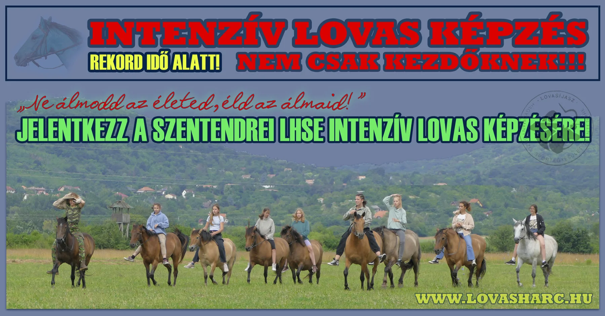

ha teheti: ADÓJA 1%-ÁVAL TÁMOGASSA A LOVASÍJÁSZ HAGYOMÁNYŐRZŐ SPORTEGYESÜLETET! Bankszámlaszámunk: (K&H) - 10 40 31 12 - 31 11 67 78 - 000 000 00

Lovasíjász Hagyományőrző Sportegyesület
LHSE AKTUÁLIS - egyesületi információk
LOVASHARC.HU - főoldal